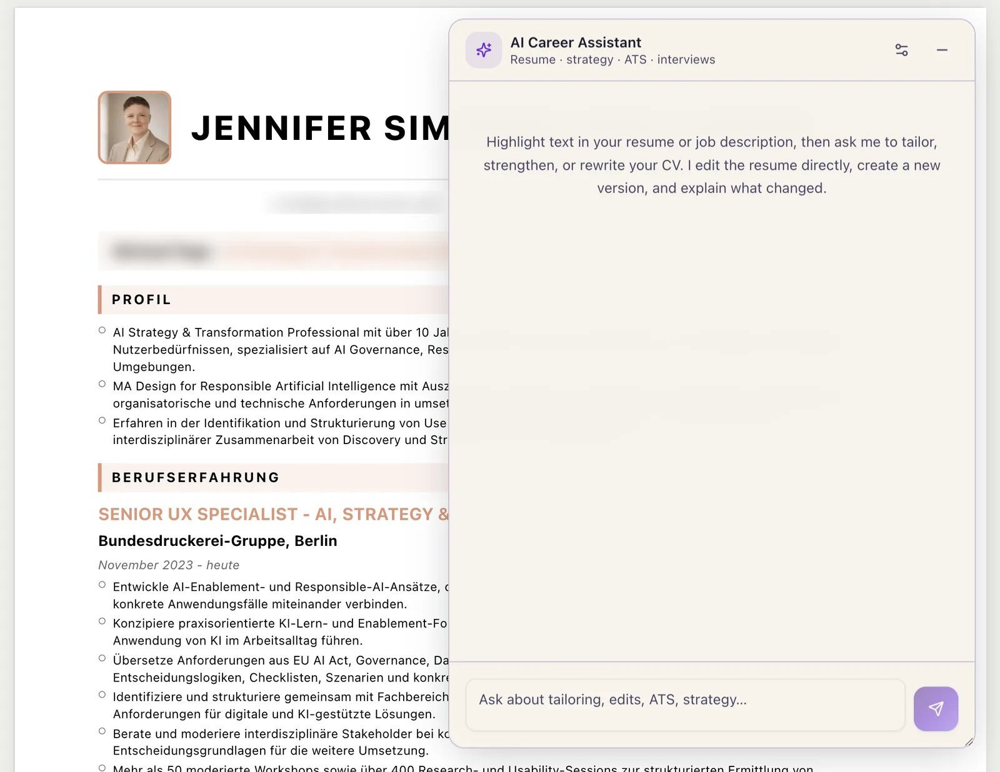

01 / 06
UX research · AI agents · Inclusion
EquitAI
An AI agent and automation prototype for CVs and job applications, starting from the recruitment barriers migrant and refugee women face.
- The question
- What should AI automate in a job application, what should it only augment, and where must the applicant stay in control?
- What I built
- A live tool that helps people tailor CVs and cover letters and track applications, keeping their own voice at the centre.
- Built with
- Cursor · Next.js · Vercel · Supabase · GenAI
- Status
- Live experiment, started in the GRAILS 2025 programme at Elisava